YARN ResourceManager: who gets the next container?
component index | PySpark on YARN walkthrough
The ResourceManager (RM) grants a particular application a container
on a particular node. It also arranges the first launch, because there is no
ApplicationMaster (AM) yet to request it. Only the NodeManager starts the
process. The RM never receives orders.py task descriptions, rows, or
shuffle blocks.
Flow at a glance
- RM scheduler: Chooses a node with room for the AM container.
- RM launcher: Asks that node's NodeManager to start the AM.
- ApplicationMaster: Registers the new attempt with the ResourceManager.
Key distinction: RUNNING means the AM registered. Spark may still have no executors.
Show the animated flow

Runtime boundary and ownership
The RM is a long-lived Hadoop JVM shared by applications. Cluster operators or
their service manager start, monitor, and stop it. In an HA deployment, one RM
is active; a standby can take over manually or through configured automatic
failover. A Spark application finishing releases its resources, not the RM.
Three callers, three contracts
| Caller and Hadoop RPC endpoint |
Input |
What the caller gets back |
spark-submit to ClientRMService (ApplicationClientProtocol) |
getNewApplication(), then submitApplication(ApplicationSubmissionContext) with application ID, queue, AM resource request, and AM launch context |
The first call returns an ID and maximum resource capability. A submission acknowledgement is not a running AM. getApplicationReport returns state, current attempt, diagnostics, and final status. |
NM to ResourceTrackerService (ResourceTracker) |
registerNodeManager advertises a NodeId and capacity. nodeHeartbeat reports health and container statuses. |
Registration response; heartbeat responses can identify containers or applications to clean up, or instruct the NM to resynchronize. This is node liveness. |
Spark AM to ApplicationMasterService (ApplicationMasterProtocol) |
registerApplicationMaster; repeated allocate calls with response ID, progress, updated resource asks, and IDs to release; finally finishApplicationMaster with final status and diagnostics |
allocate can return zero or more grants, completed container statuses, headroom, and NM tokens. These calls also establish attempt liveness; headroom is not a promise of a grant. |
The RM holds separate records for the application (RMApp), its attempts,
registered nodes, and allocated containers. Its scheduler accounts for queue
usage and outstanding asks. An ask describes a count, resource vector, priority,
and locality (host, rack, or *), not a Spark partition. Available capacity
must fit on an eligible node under the configured scheduler's queue and placement
rules. Several nodes' spare memory cannot be combined into one container.
Worked flow: one AM, then three executors
Sequence diagram · Open full sizeText equivalent
sequenceDiagram
participant C as Submit client
participant R as Active RM
participant N1 as NM selected for AM
participant A as Spark AM
participant N2 as NM selected for executor
C->>R: Submit AM resource request and launch context
R->>N1: startContainers for the AM
N1->>A: Localize and start AM JVM
A->>R: Register, then allocate with executor asks
R-->>A: Container IDs, node addresses and tokens
A->>N2: startContainers for an executor on its granted node
N2->>N2: Localize and start executor JVM
N2->>R: Node heartbeat with container exit status
A->>R: Next allocate heartbeat
R-->>A: Completed container status
- The client submits the paid-orders application. The scheduler must first fit the AM, not all four containers. While the attempt is waiting to launch or register, the application can still show
ACCEPTED.
- The RM's
AMLauncher sends the selected NM a start request using the submitted AM launch context. When the AM registers, the application transitions to RUNNING; that does not mean any executor has registered with Spark.
- The AM asks for three two-vcore executor containers. If only two fit, it can receive two now and the third later. Each grant identifies its own NM; the AM, not the RM, sends the executor launch instructions there.
- As NMs report exits, the RM accounts for freed capacity and the AM learns of completions on
allocate. The response ID matters: for an immediately repeated heartbeat whose reply was lost, the RM can return the cached reply instead of allocating twice.
- On orderly finish the AM unregisters with a final status such as
SUCCEEDED; YARN can then show application state FINISHED. An AM failure instead can trigger a new attempt, subject to limits. Neither path retries an individual Spark task.
Where a failure shows up
| Observation |
First distinction to make |
Long-lived ACCEPTED |
Compare yarn application -status <app_id> and yarn applicationattempt -list <app_id> with the RM scheduler view. No AM grant points to queue limits, node fit, or placement; an AM container ID points next to that NM's launch logs. |
RUNNING, but zero Spark executors |
Check AM asks versus grants. With no grant, inspect the queue and eligible nodes. With a grant, follow its ID to the NodeManager and then to executor registration at the Spark driver. |
| RM unavailable |
New submissions and allocations cannot progress against it. Existing processes need not die immediately. With work-preserving recovery, NMs report surviving containers and AMs resend outstanding asks; a fresh RM alone cannot reconstruct a Python driver stack. |
Sources